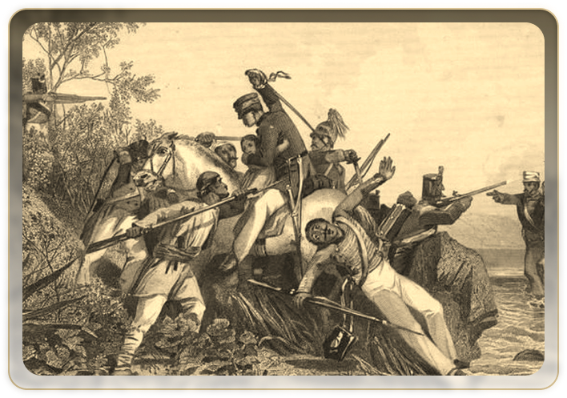
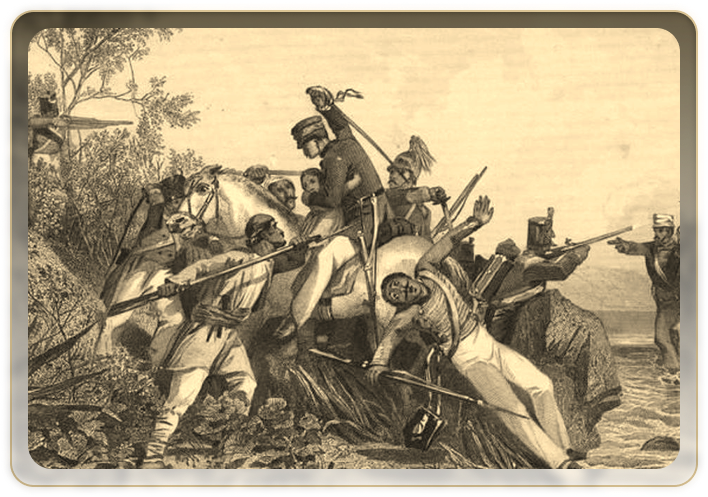

A brief understanding of the milestones within the chronicles of our Legislative History in this time period. The Revolt of 1857 - the deafening roar against colonialism that originated in modern-day Uttar Pradesh. The First Council that had Indian representation. Indian Legislative Institutions evolving while contributing to the World War effort.


 



It was after this rebellion that the British Crown assumed direct control over the British held Indian territories, on the 1st of November 1858. With this move, The East India Company ceased to be a sovereign power over India, ending the era of India being ruled by a trading organisation.

Indian Councils Act was passed as a way to incorporate Indian representation within legislative institutions that governed them. Find here the different years when the Indian populace fought for more and better representation, making their voices heard.

Raja Pratap Narayan Singh
 Raja Pratap
Narayan Singh
Raja Pratap
Narayan Singh
 Rai Bahadur
Durga Prasad
Rai Bahadur
Durga Prasad
 Pandit
Ajudhyanath
Pandit
Ajudhyanath